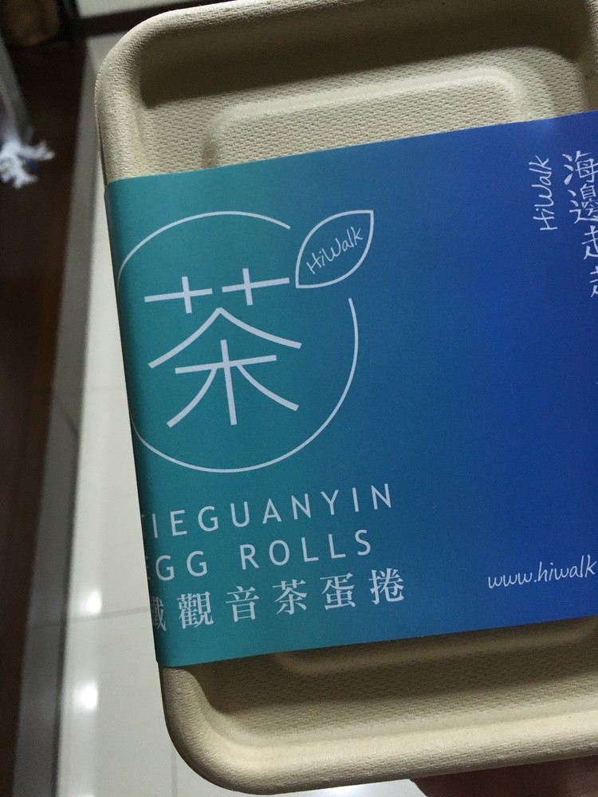

灰色的紙盒，讓人有種觸摸清水模的療癒感。
SHOPLINE跨境專案的店家，海邊走走推出新口味。搶在1111雙十一購物節推出第二盒半價優惠！完全勸敗～這次不只在台灣推出針對雙十一購物節優惠，在香港也同步推出免運活動！讓兩地的消費者可以享受到最具特色的台灣手工蛋捲。
這次的鐵觀音蛋捲是採用台灣原生的鐵觀音茶葉入味，將台灣製茶達人手工烘焙的茶葉碾碎後，與傳統的蛋捲結合，碰撞出不同的跨界滋味。搭配一杯咖啡或是台灣高山茶，都十分好吃！

目前海邊走走在松菸誠品、武昌誠品以及淡水擁有實體商店，另外也利用SHOPLINE系統開了台灣、香港、新加坡官網。利用網路無遠弗屆的特性，將淡水豐富的人文滋味，傳遞到世界各地的消費者手中。
不在台北的捧油，也請利用以下官網選購唷～